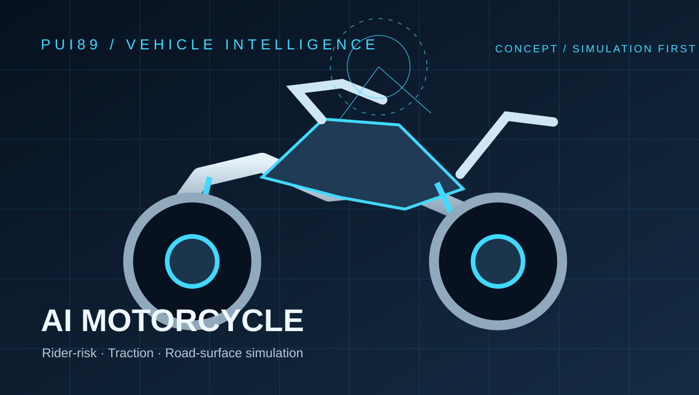

ความเสี่ยงผู้ขับขี่
วิเคราะห์สถานการณ์จำลองที่เกี่ยวข้องกับการทรงตัว การเบรก การเข้าโค้ง และสิ่งกีดขวาง
แนวคิดมอเตอร์ไซค์ AI เน้นความเสี่ยงผู้ขับขี่ แรงยึดเกาะ และสภาพพื้นถนน โดยจำลองก่อน

วิเคราะห์สถานการณ์จำลองที่เกี่ยวข้องกับการทรงตัว การเบรก การเข้าโค้ง และสิ่งกีดขวาง
ทดสอบเชิงซอฟต์แวร์กับพื้นถนนแห้ง เปียก กรวด น้ำมัน และน้ำแข็ง โดยเป็นค่าจำลอง ไม่ใช่การวัดจากรถจริง
ผลลัพธ์เป็นคำแนะนำเท่านั้น ไม่มีคำสั่งคันเร่ง เบรก หรือบังคับเลี้ยว
บันทึกแหล่งข้อมูล ความไม่แน่นอน ข้อผิดพลาด และกรณีข้อมูลหาย พร้อมทดสอบซ้ำได้
กำหนด Observation, WorldState, ActionProposal และ FailureReport พร้อมทดสอบข้อมูลผิดปกติ
สร้างสถานการณ์สังเคราะห์ที่ทำซ้ำได้ ก่อนเชื่อมต่อฮาร์ดแวร์
ตรวจสอบอันตราย ความผิดพลาด ความไม่แน่นอน และการอนุมัติโดยมนุษย์
เผยแพร่เฉพาะผลที่ทดสอบได้จริง แยกแนวคิดออกจากสมรรถนะที่พิสูจน์แล้ว
หมายเหตุ: QR ใช้บริการสร้างภาพ QR ภายนอกโดยไม่ต้องติดตั้งซอฟต์แวร์หรือสมัครบริการแบบชำระเงิน